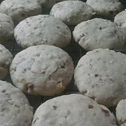

Mexican Wedding Cookies

Description
- 1 cup butter
- ½ cup white sugar
- 2 teaspoons vanilla extract
- 2 teaspoons water
- 2 cups all-purpose flour
- 1 cup chopped almonds
- ½ cup confectioners' sugar
Steps
- In a medium bowl, cream the butter and sugar. Stir in vanilla and water. Add the flour and almonds, mix until blended. Cover and chill for 3 hours.
- Preheat oven to 325 degrees.
- Shape dough into balls or crescents. Place on an unprepared cookie sheet and bake for 15 to 20 minutes in the preheated oven. Remove from pan to cool on wire racks. When cookies are cool, roll in confectioners' sugar. Store at room temperature in an airtight container.